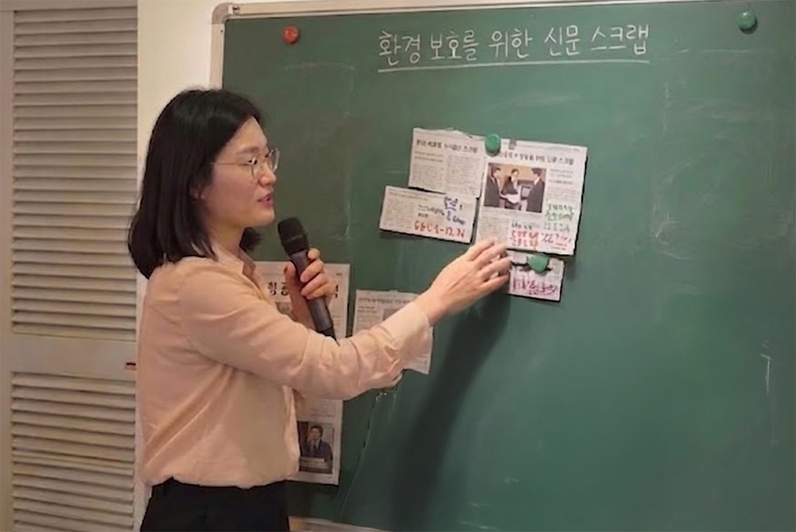
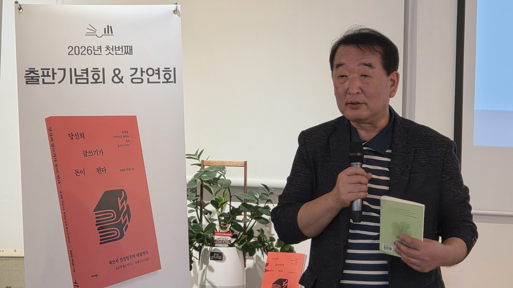

연플래닝 아카데미 본원장님 특별 수업
이진우 원장 직접 주 1회 플래닝 강좌이진우 원장님이 주 1회 직접 진행하시는 플래닝 특별 강좌. 20년 자기주도 학습 철학과 연플래닝 노하우를 압축해, 학생이 스스로 자기 미래를 설계하는 시간입니다.
(파일명 예:
이원장_플래닝강좌.jpg)🎯 수업의 핵심 가치
🌟 학생이 얻는 것
- 일반 수업으로는 만나기 어려운 이 원장님과의 정기적 1:1 시간
- 플래너를 "쓰기"가 아니라 "사용"하는 법을 몸에 익힘
- 장기 비전과 주간 실천을 연결하는 사고력
- 매주 자기 한 주를 되돌아보는 반성·재설계 습관
문해력 수업 — NIE 신문 스크랩 중심
박미향 원장 직접 초등 전 학년 주 2회글을 읽고 핵심을 파악하는 힘. 모든 과목의 바탕이 되는 읽기·생각하기 능력을 기릅니다. 책을 읽되 "어떻게 읽었는가"가 중심입니다.

🎯 수업의 핵심 가치
📋 수업 진행 방식 (단계별)
🌟 학생이 얻는 것
- 긴 글을 두려워하지 않고 끝까지 읽는 끈기
- 중요한 것과 덜 중요한 것을 구분하는 판단력
- 읽은 내용을 자기 언어로 표현하는 능력
- 매일 신문을 손에 잡는 습관 — 평생 자산
- 모든 과목(국어·사회·과학)에 즉시 영향을 미치는 문해 근육
초등 영, 수, 국 교과목 수업 — 기억의 궁전 · 목차 외우기
이진우 원장 직접 초등 4~6학년 영어·수학·국어영어·수학·국어 핵심 개념과 교과 내용을 스스로 이해하고 설명할 수 있을 때까지 반복합니다. 단순 문제 풀이가 아닙니다. 두뇌 원리에 기반한 학습을 가르칩니다.
(파일명 예:
기억의궁전_도식.jpg)🎯 수업의 핵심 가치
📋 수업 진행 방식 (단계별)
🌟 학생이 얻는 것
- "외웠는데 자꾸 잊는다"가 사라짐 — 장기 기억의 구조
- 새 단원을 만나도 두렵지 않은 메타인지
- 중·고교 수학·과학으로 넘어가는 단단한 토대
- 암기 과목(역사·사회)에도 즉시 응용 가능한 학습법
- "공부하는 법"을 평생 도구로 가져감
1:1 플래너 관리 — 미래 설계 마인드맵 포함
박미향 원장 직접 전 학년 주 1회 이상박 원장이 학생 한 명 한 명의 연플래너를 직접 점검합니다. 플래너를 채우는 것이 목적이 아니라, 학생이 스스로 자기 미래를 설계하는 과정을 돕습니다.
(파일명 예:
학생_미래설계_마인드맵.jpg)🎯 수업의 핵심 가치
📋 수업 진행 방식 (주차별)
🌟 학생이 얻는 것
- "왜 공부하는가"에 대한 자기만의 답
- 매주 자기 한 주를 점검하는 평생 습관
- 장기 비전과 일주일 실천을 연결하는 사고력
- 박 원장님과의 1:1 신뢰 관계 — 학습 동반자
- 성인이 되어서도 자기 인생을 설계할 수 있는 능력
연플래닝 영어 학습법 5단계
박미향 원장 직접 초·중등 본원 검증연플래닝 본원(yeon.ulsan.kr)에서 오랫동안 검증된 영어 학습 표준. 삼산 연아카데미에도 동일하게 적용되는 기본 영어 공부의 표준입니다.
(파일명 예:
영어학습_5단계.jpg)📋 영어 학습 5단계
🌟 학생이 얻는 것
- 학교 수업을 자신 있게 따라가는 사전 준비
- 영어를 "공부"가 아닌 "루틴"으로 만드는 습관
- 자기 생각을 영어로 짧게라도 표현할 수 있는 자신감
- 중·고교 영어로 넘어가는 단단한 토대
영화 인문학 수업
박미향 원장 직접 인문학 수업영화를 매개로 인생·관계·사회를 생각해보는 수업. 박 원장님의 학습심리코칭 정체성을 가장 잘 드러내는 영역입니다.
(파일명 예:
영화당갈_수업자료.jpg)🎯 수업의 핵심 가치
📋 수업 진행 방식
🎬 대표 사례 — 영화 「당갈 (Dangal)」
🌟 학생이 얻는 것
- 영상 콘텐츠를 깊이 있게 읽어내는 능력
- 인물의 마음을 통해 자기 마음을 들여다보는 성찰력
- "나라면 어떻게"라는 자기 입장 글쓰기 훈련
- 부모님과 영화 이야기로 대화하는 시간
어린이 동시 수업 — 윤창영 작가 직강
외부 강사 직강 8주 과정 동시집 출판 초등부8주 과정으로 진행되는 시 창작 특별 수업. 학생이 직접 동시를 쓰고, 마지막에 자기 이름으로 된 동시집을 출판합니다. 2026년 박 원장님이 기획한 첫 대형 프로젝트.

박미향 원장님이 기획·연결한 외부 특별 수업입니다.
(박 원장님 직접 수업이 아닙니다 — 기획·연결은 박 원장님)
🎯 수업의 핵심 가치
📋 수업 진행 방식 (8주 과정)
🌟 학생이 얻는 것
- 자기 이름이 박힌 동시집 한 권 — 평생 보물
- 자기 마음을 시어로 표현하는 깊은 경험
- 실제 시인·작가와의 만남 — 평생 자산
- 매주 한 편씩 — 8주 동안 쓰는 습관
- 출판기념회에서 자신의 시를 가족·친구에게 낭독하는 특별한 순간
박원채 논술 수업
외부 강사 직강 통섭적 사고 14개 주제「통섭적 사고」를 키우는 논술 특별 수업. 14개 주제 영역을 가로지르며 사회·역사·미래·문화를 통합적으로 생각하는 힘을 기릅니다.
(파일명 예:
박원채_통섭적사고_도식.jpg)박미향 원장님이 기획·연결한 외부 특별 수업입니다.
📚 14개 주제 영역 (안쪽 원)
| 사회·정치 | 정치·사회 / 자기 계발 / 과학·기술·공학 / 경제·경영 |
| 미래·진로 | 장래 희망 / 철학·심리학 / 여행·취미·추리 |
| 역사·학습 | 역사·세계사 / 초중고 학습 / 외국어 / 핵심 교재 |
| 동기·논제 | 주요 논제 100 / 동기 유발 |
| 문학·문화 | 잡지·만화·수필 / 문학 / 여행·취미·추리 |
🌟 8가지 도달 가치 (바깥쪽 원)
🌟 학생이 얻는 것
- 한 주제를 깊이 파고드는 끈기 있는 사고력
- 서로 다른 분야를 연결해 보는 통합적 시야
- 자기 생각을 글로 정리하는 글쓰기 근육
- 중·고교 논술·서술형 평가의 단단한 토대
책쓰기 수업
박미향 원장 직접 작가 출신 원장 직강 자기 책 출간학생이 직접 책을 씁니다. 박미향 원장님은 3권의 책을 직접 쓴 작가입니다. 그 경험을 학생들과 함께합니다.
(파일명 예:
박원장_저서_3권.jpg)🎯 수업의 핵심 가치
📋 수업 진행 방식
🌟 학생이 얻는 것
- 자기 이름의 책 한 권 — 평생 자산
- 장기 프로젝트를 마무리하는 끈기와 집중
- 독서 → 사고 → 정리 → 표현으로 이어지는 통합 사고
- 박 원장님과 작가 대 작가의 호흡
- "나도 글을 쓰는 사람"이라는 정체성
창의심리 미술수업
외부 강사 직강 정서 안정 창의성 개발 초등부미술 활동을 통해 아이의 정서적 안정과 창의성을 키우고, 내면의 심리를 치유하는 특별 수업입니다. 자유로운 드로잉과 색채 표현을 통해 스트레스를 해소하고 스스로 표현하는 즐거움을 배꿉니다.
(파일명 예:
심리미술_수업현장.jpg)🎯 수업의 핵심 가치
📋 수업 진행 방식 (단계별)
🌟 학생이 얻는 것
- 정서적 안정과 일상적 불안·스트레스의 자연스러운 완화
- 자신만의 독창적인 조형적·예술적 표현 능력
- 작품을 논리적이고 풍부하게 설명하며 기르는 자기표현력
- 하나의 작품을 포기하지 않고 완성하며 얻는 깊은 성취감과 자존감
NIE 교육 (신문스크랩)
특별 수업 신문 스크랩 시사 토론 비판적 글쓰기매일 새로운 뉴스와 칼럼을 읽고 스크랩하며, 세상의 흐름을 읽는 안목을 기르고 비판적 사고력과 문해력을 키웁니다.
(파일명 예:
NIE_신문스크랩_워크북.jpg)🎯 수업의 핵심 가치
📋 수업 진행 방식 (단계별)
🌟 학생이 얻는 것
- 다양한 시사 분야에 대한 폭넓은 교양과 배경지식
- 긴 분량의 비문학 지문도 논리적으로 꿰뚫어 보는 실전 문해력
- 자신의 견해를 논리적 근거로 뒷받침하여 조리 있게 표현하는 논술 근육
- 사회를 더 넓고 깊은 입체적 시각으로 성찰하는 태도
이진우 원장 직강 인성교육
이진우 원장 직강 인성 성품 정서 코칭 공부 태도바른 인성과 마음 태도가 공부의 진짜 시작입니다. 이진우 원장이 직접 명상과 고전을 활용해 배움의 참된 자세를 일깨워 줍니다.
(파일명 예:
이진우원장_인성교육.jpg)🎯 수업의 핵심 가치
📋 수업 진행 방식 (단계별)
🌟 학생이 얻는 것
- 학습을 방해하는 잡념과 정서적 불안의 근원적 해소
- 가족, 친구, 선생님과의 원활하고 따뜻한 의사소통 태도
- 스스로 감정을 통제하고 올바른 결정을 내리는 높은 정서 지능(EQ)
- 공부에 대한 강박에서 벗어나 배우는 즐거움과 건강한 자아 정체성